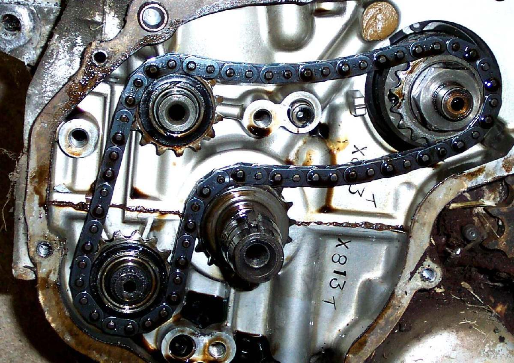
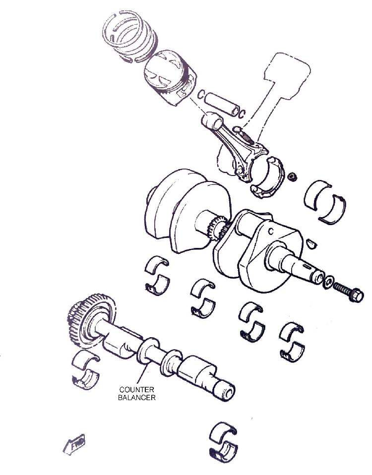
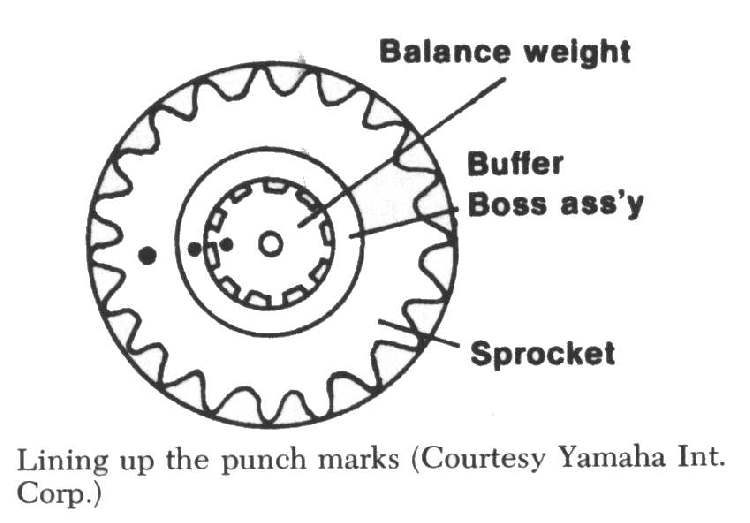
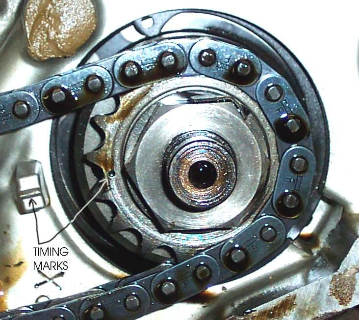

A counterbalancer is a weighted shaft that turns with the crankshaft to cancel vibration. Most single and twin cylinder four-strokes have one or two. Many small commuter engines have none.
What it does
The piston and rod move up and down and shake the engine. The crankshaft weights cancel part of this, and the balancer weight cancels most of the rest. The balancer turns so its weight moves the opposite way to the piston. Engines with three or more cylinders are smoother and often need no balancer.
Signs it is worn or failing
- Vibration through the bars, pegs and seat that is worse than before, especially at a steady engine speed. See New engine vibration.
- A rattle or whine from inside the engine on a chain-driven balancer with a stretched chain.
- A balancer that is out of time after a rebuild: the engine shakes far more than it should.
When to replace it
A balancer drive chain or its tensioner is replaced when it is worn, loose or noisy. Gears rarely wear. Do not remove a balancer to save weight or gain power unless the crankshaft is rebalanced to suit. The crank weights are made for the balancer.
What to match when buying
- Give the engine code. Gear-drive and chain-drive versions are different.
- A chain-drive balancer needs the correct chain length and, where fitted, the tensioner or adjuster sprocket.
- Used parts must have clear timing marks and undamaged teeth.
Fitting notes
- Gear drive: the gear on the crankshaft and the gear on the balancer have punch marks. They must line up at assembly. If they are even one or two teeth out, the engine will vibrate badly. See Set balancer marks.
- Chain drive: there are marks on the sprockets and on the crankcase. They must match with the chain on and adjusted. A spring-loaded adjuster is released and tightened to set the chain.
- Check the marks twice before the case is closed. See Assess bottom end and internal engine damage.